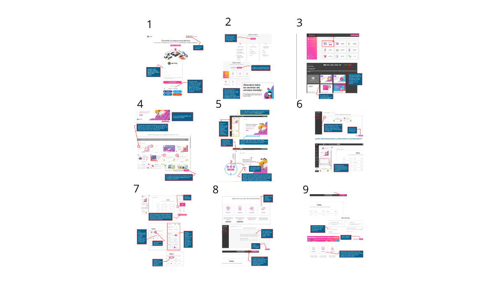

genially
¿QUE ES?¿PARA QUE SIRVE? Y COMO LO PUEDO UTILIZAR
es una herramienta de creacion de contenido interacitivo en linea y sive para crear
presentaciones,infografias,juegos y otros tipos de contenido interactivo de manera
facil y rapida y se puede utilizar en varios contextos como de educacion y marketing.
la manera de utilizarla es igual que las otras aplicaciones
- crea una cuenta gratuita o de paga dependiendo tus necesidades
- elije un tipo de contenido como una presentacion, un juego o una infografia
- elije una plantilla que se adapte a tu tema y puedes personalizarla a tu gusto
- agrega contenido como texto,imagenes,videos o elementos de tu tema
- personaliza la iteractividad agregando botones, enlaces y animaciones
- por ultimo comparte tu contenido en diferentes plataformas y formatos

no encontre su creador pero la empresa que la creo se llama Startup de España, ayudo a la comunidad digital
con su facilidad de generar contenidos interactivos sin necesidad de programar ni si quiera conocimientos
en diseño y por esto tiene varias caracteristicas que la destacan de las demas aplicaciones como:
- interactividad crea desde imagenes o presentaciones con elementos con las que puedes interactuar y las
hace visualmente atractivas
- facilidad de uso que no requieres conocimientos tecnicos avanzados para crear algo interactivo y
llamativo
- sus plantillas prediseñadas ayudan a crear diferentes tipos de contenido
- su integracion permite agragar cosas de internet facilmente
- animacion con la que puedes dar vida desde a imagenes, graficos, y tablas con movimientos
¿COMO HACER UNA IMAGEN INTERACTIVA FACILMENTE?
- crea una cuenta en genially que es gratis pero tambien hay una version de paga con mas funciones
- elije el tipo de contenido que vas a crear, en este caso es "imagen interactiva"
- elije la plantilla que mas te guste o puedes hacer una tu desde cero
- agrega la imagen que vas a usar como base de tu "imagen interactiva"
- agrega elementos interactivos que tu quieras como los botones,enlaces, ventas, etc.
- personaliza los elementos que acabs de elejir segun tu gusto
- configura la imagen con los elementos que necesites para tu imagen interactiva
- por ultimo queda compartir tu creacion en diferentes plataformas o con personas
regresar al inicio